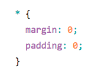
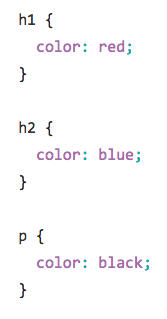
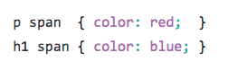
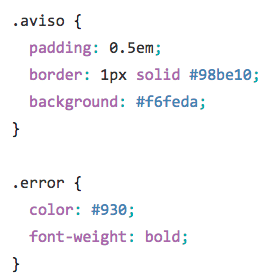
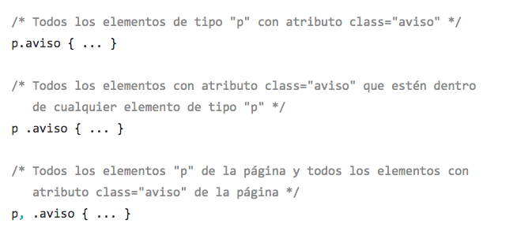
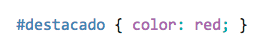
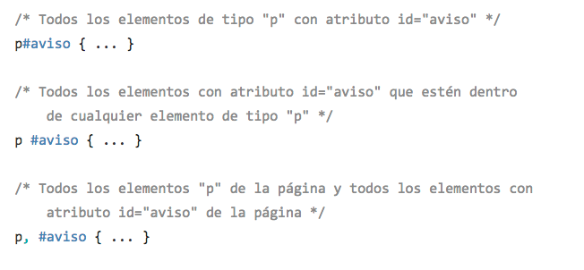
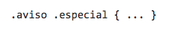
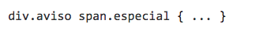
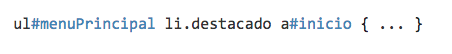

Los estilos en cascada
Selectores básicos
Una regla de la sintaxis de CSS está formada por una parte llamada selector y otra parte llamada declaración. La declaración indica que hay que hacer (propiedades) y el selector a qué se le debe hacer.

Existen otras partes importantes de la sintaxis:
1. Cada conjunto de reglas (aparte del selector) debe estar envuelto en llaves ( {} ).
2. Dentro de cada declaración, debe usar dos puntos ( : ) para separar la propiedad de sus valores.
3. Dentro de cada conjunto de reglas, debe usar un punto y coma ( ;) para separar cada propiedad de la siguiente.
Tipos de selectores básicos
- Selector universal: Se utiliza para seleccionar todos los elementos de la página. 
- Selector de etiqueta: Selecciona todos los elementos de la página cuya etiqueta HTML coincide con el valor del selector. (Se pueden agrupar separados por (,)) 
- Selector descendente: Selecciona los elementos que se encuentran dentro de otros elementos. 
- Selector de clase: La principal característica de este selector es que en una misma página HTML varios elementos diferentes pueden utilizar el mismo valor en el atributo class. Prefijo (.) 
- Selector de id: El selector de ID permite seleccionar un elemento de la página a través del valor de su atributo id. Este tipo de selectores sólo seleccionan un elemento de la página porque el valor del atributo id no se puede repetir en dos elementos diferentes de una misma página. Prefijo (#) 
Ejercicios:
Universal: p * a { color: red; }
Etiqueta: h1 { color: orange; }
Etiqueta agrupado: h1, h2, h3, h4, h5, h6 { color: purple; }
Descendente: p a span strong { text-decoration: underline; }
Clase: p.ejemplo1 { color: yellow; }
Clase múltiple: .ejemplo2.ejemplo3 { color: blue; }
Id: p#ejemplo4 { color: blue; }
CSS permite la combinación de uno o más tipos de selectores para restringir el alcance de las reglas CSS. Ejemplos:



Pseudo-clases en enlaces
CSS también permite aplicar diferentes estilos a un mismo enlace en función de su estado. Ejemplo: Ejemplo 1 Ejemplo 2 Ejemplo 3 Ejemplo 4
Menús
Ejemplos
Tarea: Realiza las siguientes reglas de CSS con base en lo visto en clase.
- section * h2 { color : pink; font-size: 30px; }
- p { padding-right: 5%; padding-left: 10px; }
- h2, h3 { color: blue; font-size: 25px;}
- section, div { background-color: black; color: white; }
- div p span { color: yellow; }
- div p span strong i { background-color: blue; color: white; }
- p.tarea1 { color: gray; }
- section.tarea2 p.tarea3 { font-size: 30px; color: pink; }
- div#tarea1 { background-color: gray; }
- ul#tarea2 li { display: inline; background-color: purple; }
- nav#tarea3 ul#tarea4 li.tarea4 a { background-color: red; color: white; padding: 2%; }